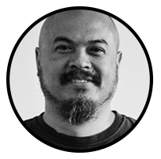

art
technology
Thomas Castro
12 Março - Museu da Ciência

Founded LUST with Jeroen Barendse, and Dimitri Nieuwenhuizen, a multidisciplinary graphic design
practice established in 1996 by , based in The Hague, Netherlands. LUST works in a broad spectrum of media including traditional printwork and book design, abstract
cartography and data-visualisations, new media and interactive installations, and architectural graphics. Moreover, LUST is deeply interested in exploring new
pathways for design at the cutting edge where new media and information technologies, architecture and urban systems and graphic design overlap.
This fascination led
to establishing LUSTlab in the summer of 2010. LUSTlab is more than a new form of Research & Development. LUSTlab goes further than observing, inventing and
producing, by means of forming a platform where knowledge, issues and ideologies can be shared.
LUSTlab researches, generates hypotheses and makes unstable media
stable again. The future of digital media lies in the design of its use. Humanizing the unhuman, bringing the internet down to earth and finding the missing link
between the digital and the physical. The outcomes vary from (strategic) visions to new communication tools, man-machine installations and physical products using
digital content.